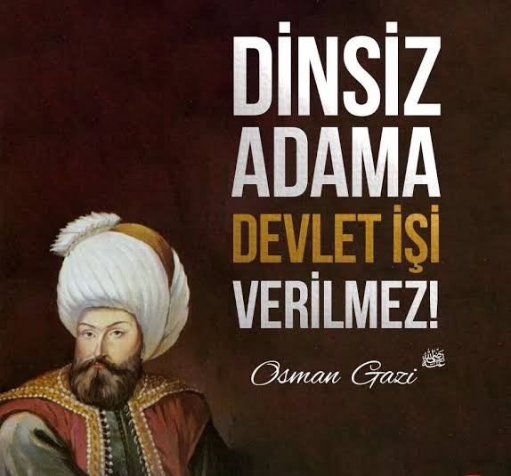

"Beyni sulanmış hafızlar Türk milleti bir kelimesinin Manasını bilmediği halde Kuran'ı ezberlemekten beyni sulanmış hafızlara döndüler." M.Kemal
(Kaynak : "Medeni bilgiler, Afet İnan ,Türk Tarih Kurmumu BasımEvi, Ankara 1969, s 364-365.")
"Dini ve Namusu olanlar kazanamazlar, fakir kalmaya mahkumdurlar. Onun için önce din ve namus telakkisini kaldırmalıyız." M.Kemal
(Kaynak : "İstanbul, Tekin Yayınevi, 1990, s 83-84.")
"Benim bir dinim yok ve bazen bütün dinlerin denizin dibini boylamasını istiyorum. Hükümetini ayakta tutmak için dini kullanmaya gerek duyanlar zayıf yöneticilerdir, adeta halkı bir kapana kıstırırlar." M.Kemal
(Kaynak : "Andrew Mango, Atatürk, s 447.")
"Din körü körüne bağlanmaktır. Gerçekte dinleri konusunda hiçbir fikri yoktur, din dediği şey, bilinmeyen inanç dizgelerine ve gizle karışık emellere kör bağlılıktan başka birşey değildir." M.Kemal
(Kaynak : "Atatürk'ün El Yazmaları, Medeni Bilgiler, Afet İnan"
"Tarih bize öğretir ki, bütün dinler, milletlerin cehaletlerinin yardımıyla utanmaksızın Tanrı tarafından gönderildiğini söyleyen adamlar tarafından tesis olunmuştur." M.Kemal
(Kaynak : "Atatürk'ün El Yazmaları, Medeni Bilgiler, Afet İnan")
"İnsanları Allah değil 'tabiat üretti' Natür (Tabiat) İnsanları üretti, onları kendisine taptır da..." M.Kemal
(Kaynak : "Atatürk'ten Düşünceler, Derleyen: Prof. Enver Ziya.")
"Kralların ve padişahların istibdadına (Baskılı yönetim), dinler mesnet olmuştur." M.Kemal
(Kaynak : "Atatürk'ün El Yazmaları, Medeni Bilgiler, s 30.")
"Kuranın yasalarını Muhammed yazmıştır. Muhammed'in koyduğu esasların toplu olduğu kitaba Kuran denir." M.Kamal
*(Kaynak : "Atatürk'ün emriyle liselerde okutulan tarih kitabı (1938) 2. cilt. ")*
Yani durum ortada Atatürk net kafir. Hadi bu belgeli kanıtları yalanlıyacaksın "Maide suresi 44.Ayetinidemi yalanlıycaksın! Ey Zaaf"
"Müminler, müminleri bırakıp da Kafirleri dost edinmesinler. Kim de böyle yaparsa onunla Allah arasında (İslam ve İman) arasında hiçbir bağ kalmamıştır"
(Al-i İmran 28)
